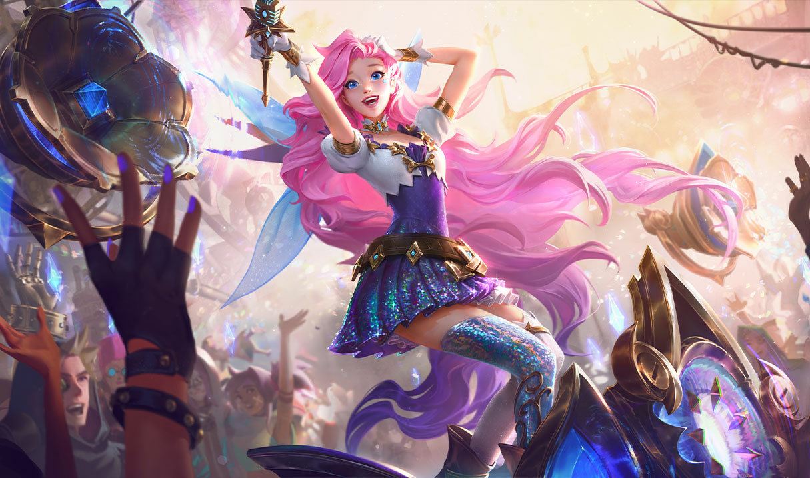
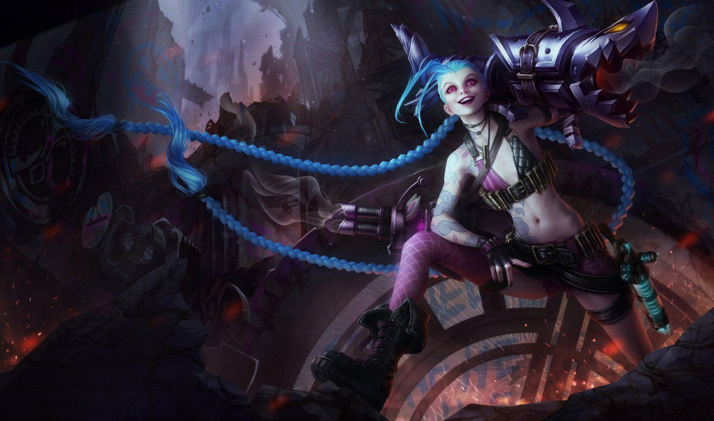

Histórias dos Campeões
League of Legends é repleto de histórias fascinantes. Aqui estão algumas histórias dos meus campeões favoritos:

Seraphine
Uma jovem de Piltover com a habilidade de ouvir as almas ao seu redor. Seraphine usa sua música para unir pessoas e inspirar mudanças.

Mordekaiser
Um tirano imortal que busca conquistar a vida e a morte. Ele domina o Reino dos Mortos e usa sua força para moldar o destino de Runeterra.

Jinx
Uma criminosa caótica de Zaun, conhecida por suas explosões e comportamento imprevisível. Ela adora deixar um rastro de destruição por onde passa.